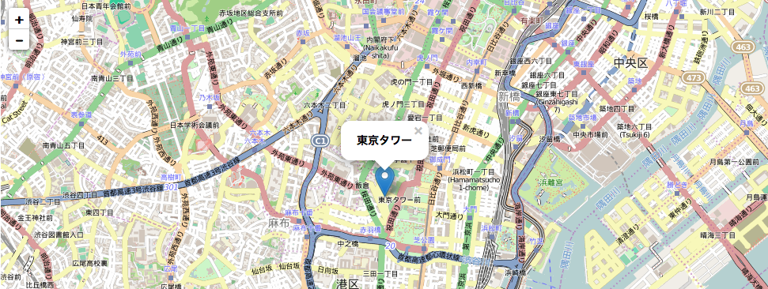
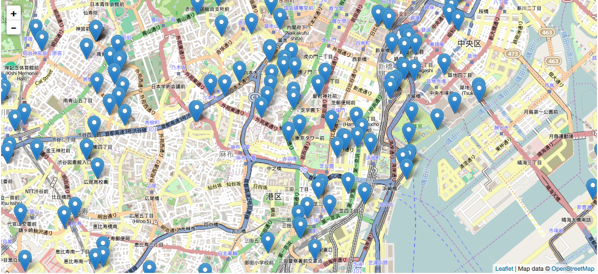

最近ずっとPostGISをいじっていろいろやっていたわけですが、
そろそろ地図を動かしたりしてみたい！！
ということでleafletに挑戦してみます。
東京の観光名所のデータを地図上に表示することを目標にします。
地図上に大量のマーカーを置く時は、GeoJSONを利用するとらしいので、
観光地のデータはGeoJSON形式にします。
そのためにやらなくてはいけないことは、、、
- leafletで地図を表示
- 地図にマーカーを表示
- GeoJSONの観光地データを準備
- 地図にGeoJSONのデータを表示
という感じになります。
ひとつひとつやっていきます。
leafletで地図を表示
leafletとは地図のためのJavaScriptライブラリ。
OSMなどのオープンデータを簡単に表示することができます。
<head>タグ内でCSSとLeafletを読み込みます。
1 2
| <script src="http://cdn.leafletjs.com/leaflet-0.7.3/leaflet.js"></script> <link rel="stylesheet" href="http://cdn.leafletjs.com/leaflet-0.7.3/leaflet.css">
|
地図を描画したいところにタグを置きます。
今回は<body>タグの中におきました。
CSSで地図の幅、高さを指定
1 2 3 4
| #map{ width: 100%; height: 500px; }
|
<script>タグ内で地図のデフォルト値を設定し、地図を描画します。
今回は東京タワーの場所をデフォルトにしました。
1 2 3 4 5 6 7 8 9 10 11
| var map = L.map('map').setView([35.65863174 , 139.74542422], 14); L.tileLayer( 'http://{s}.tile.openstreetmap.org/{z}/{x}/{y}.png' ,{ attribution: 'Map data © <a href="http://openstreetmap.org">OpenStreetMap</a>', maxZoom: 18 } ).addTo(map);
|
地図を表示するのはたったこれだけで完了！
地図にマーカーを表示
東京タワーの場所にマーカーを表示します。
1 2 3
| var marker = L.marker([35.65863174 , 139.74542422]) .bindPopup("<h3>東京タワー</h3>") .addTo(map);
|
こんな感じで表示できました！

GeoJSONの観光地データを準備
PostGISにいれたOSMのデータから観光地のデータを抜き出します。
As_Geojsonを使うと、GeoJSON形式で出力できるようです。
検索条件についてはこちらを参照。
1 2 3 4 5 6 7 8 9 10 11 12 13 14 15 16 17 18 19 20 21
| SELECT row_to_json(feature) FROM ( select 'Feature' AS type, ST_AsGeoJSON(ST_Transform(trm.way,4326))::json AS geometry, row_to_json(( SELECT p FROM ( SELECT trm.name ) AS p )) AS properties from planet_osm_point trm ,planet_osm_polygon tky where tky.name = '東京都' and tky.boundary = 'administrative' and trm.tourism is not null and trm.name is not null and ST_Contains(tky.way,trm.way) ) AS feature ;
|
こうすると、こんな感じの検索結果になります。
1
| {"type":"Feature","geometry":{"type":"Point","coordinates":[139.729260969094,35.6604319722521]},"properties":{"name":"森美術館"}}
|
GeoJSONのデータを地図で表示。
<script>タグ内でGeoJSONのデータを定義
先ほど取得したデータを書いておきます。
1 2 3
| var geojsonFeature = [ {"type":"Feature","geometry":{"type":"Point","coordinates":[139.729260969094,35.6604319722521]},"properties":{"name":"森美術館"}} ]
|
マーカーをセットします
1
| L.geoJson(geojsonFeature).addTo(map);
|
マーカーをクリックしたときにポップアップ表示をさせる場合はこんな感じです。
1 2 3 4 5 6 7 8
| L.geoJson( geojsonFeature, { onEachFeature: function(feature, layer){ layer.bindPopup(feature.properties.name); } } ).addTo(map);
|
GeoJSONのデータを外だしする
大量のデータをhtmlファイルに書いていくのはあんまりイケてないので、
GeoJSONのデータを外だしします。
jQueryを使うと簡単らしいので、やってみます。
こんな感じで前項で取得したデータをもとにGeoJsonのデータファイルを用意します。
ディレクトリは./data/map.geojsonとします。
1 2 3 4 5 6 7 8
| { "type": "FeatureCollection", "features": [ {"type":"Feature","geometry":{"type":"Point","coordinates":[139.74542422,35.65863174]},"properties":{"name":"東京タワー (Tokyo Tower)"}} ,{"type":"Feature","geometry":{"type":"Point","coordinates":[139.729260969094,35.6604319722521]},"properties":{"name":"森美術館"}} ・・・・ ] }
|
<head>タグ内でjQueryを読み込みます。
1
| <script src="https://code.jquery.com/jquery-2.1.1.min.js"></script>
|
データを読み込んで、表示します。
1 2 3 4 5 6 7 8
| $.getJSON("./data/map.geojson", function(data) { var geojson = L.geoJson(data, { onEachFeature: function (feature, layer) { layer.bindPopup(feature.properties.name); } }); geojson.addTo(map); });
|
こんな感じで、マーカーがたくさん表示されました！

あんまり難しいことはやっていないのですが、
これだけでかなり時間がかかってしまいました、、、
自分で地図を動かせるのは面白いので、
これからもちょいちょい勉強していきたいと思います！
参考にさせていただきました
ぬるぬる動く！Web地図クライアント「Leaflet」を使おう！ | #GUNMAGISGEEK
Leaflet - OSMにgeoJSONでマーカーをつけたりできる便利なJavaScriptライブラリ | アンギス
PostGISからGeoJSON出力するときに属性を付与する - Qiita
External GeoJSON and Leaflet: The Other Way(s)